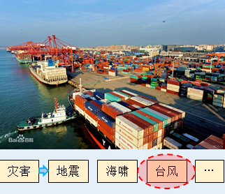

新论文：台风风灾对港口运营的经济影响：以中国港口为例

论文链接：
https://authors.elsevier.com/a/1bHyZ7t2zY-KNF

太长不看版
Law
港口运营常因为台风影响而中断，这不仅影响整个海上供应链，还会对地区和国际民生产生影响。然而，现有港口风险研究主要集中于港口的经营风险，对自然灾害，特别是台风灾害下的港口运营风险缺乏清晰的认识。针对上述问题，本文提出了一种台风风灾导致港口运营中断的经济损失评价方法。以上海、宁波、广州、深圳四个中国港口为例，根据2007-2017年的历史台风数据，评估了各港口因台风风灾造成的经济损失。该方法能直观定量地反映港口所面临的台风风灾风险，为港口管理人员在港口运营控制中做出最优决策提供依据。
研究背景
Law
全球90%的货物供应来自海上供应链。供应链中某一环节的中断都可能对供应链的其余部分产生连锁反应。港口，作为海陆之间的接口和海上运输网络中的节点，直接暴露在自然和人为的风险中。台风等自然灾害导致的港口中断可能升级到整个供应链，并对地区和国家产生影响。然而，现有港口风险研究主要集中在港口的经营风险，而对自然灾害及其对港口的影响却没有给予足够的重视。Lam和Su（2015）研究1900年以来东亚和南亚的港口中断情况，发现自然灾害是造成港口中断的主要原因之一。Adam等（2016）研究1950年至2014年影响英国港口的海事中断，发现其中48%是由风暴和风暴潮造成的。我国是台风最为频发的国家之一，近海港口受台风的影响严重（如图1所示）。

图. 1 近海港口灾害 (底图来自百度图片)
台风会在很多方面影响港口运营：1）港口操作和性能，包括航运延误、取消、偏离、港口拥挤，甚至服务信誉下降；2）港区的结构和物理破坏；3）由于港口不可操作性，导致风险沿着供应链向相连的产业集群传播。之前的研究估算过在不同类型风险下港口中断的港口损失，包括自然灾害和人为事故。大多数研究都将地震作为港口损失估算的主要自然灾害，其他类型的自然灾害，包括极端天气事件，研究较少。据作者的文献调研，现有研究很少采用系统的框架来评估极端天气事件下的港口经济损失，同时将极端风模拟（预报或后报）与港口经济损失评估相结合的研究鲜有报道。因此，作者提出一种台风诱发的风灾对港口中断而导致的经济损失评估体系来填补这些空白。
研究方法
Law
台风引起的港口中断天数、港口每日货物吞吐量是港口经济损失评估的关键。在实际运营中，港口管理者会根据港口内观测到的风速来决定是否停止港口的运营。因此，一个经验的风场模型，用于评估台风的风速，并根据港区内布置的风监测网络（最大风速大于或等于38 km/h港口中断），判断港口是否会在该台风期间停止运营，以及中断多久。图2展示了，本研究采用的台风期间的风场模型。

图. 2 台风期间风场模型
确定港口因台风造成的港口中断天数后，下一步就是评估港口每日的货物吞吐量。由于每日的吞吐量是无法观测的，本研究根据历史的月吞吐量和年吞吐量确定了将年吞吐量转换为月吞吐量的修正因子。同时假设每月内每日的吞吐量变化是缓慢的，采用每月吞吐量除以当月天数，确定每日吞吐量。因此，采用相应年份的年吞吐量推导的日吞吐量中包含了时间变化的信息。根据风场模型确定的港口中断时间、港口货物吞吐量分析，即可计算港口的经济损失。港口因中断造成的总损失，包括：港口名誉损失、托运人损失、承运人损失以及港口未运营造成的间接损失。图3展示了本文采用的经济损失评估框架。

图. 3 经济损失评估框架
计算案例
Law
以我国近海的上海港、宁波港、深圳港、广州港作为分析案例，计算了各港口自2007-2017年以来，台风风灾导致港口中断而造成的经济损失。首先，建立了一个风监测网络 (如图4所示)。根据Zhang and Lam（2015）的研究，规定当监测网络内出现最大风速持续6h超过38km/h的事件。则该事件下港口会停运，并直到24h内不出现超过38km/h 的大风，才可恢复运营。

图. 4 计算案例（中国沿海4个港口：上海港、宁波港、深圳港、广州港）
表1给出了案例港口2007-2017年港口的每年货物吞吐量。表2给出了根据港口网站确定的用于评估经济损失的系数。
表. 1 上海、宁波、深圳、广州港年货物吞吐量（单位：1000 TEUs）

表. 2 每日吞吐量经济指标系数

计算结果
Law
基于风场模型，2007-2017年造成上海、宁波、深圳、广州港，港口中断的台风如图5所示。其中，深圳港造成港口中断的台风数量最多。各年各月的中断天数统计如图6所示。其中，上海港、宁波港、深圳港和广州港风险最高的月份分别为8月、9月、8月和8月，平均每年有0.89、1.08、2.63和2.31天中断。各年各月的每日吞吐量如图7所示。如图7所示，在港口中断风险最高月份，将年吞吐量转换为月吞吐量的修正因子大于1，说明经济损失风险会进一步增大。

图. 5 2007-2017年造成上海、宁波、深圳、广州港口中断的台风

图. 6 2007-2017年上海、宁波、深圳、广州港口中断天数

图. 7 2007-2017年上海、宁波、深圳、广州港口中断天数
本文计算了上诉四个港口的经济损失，其中包括：港口名誉损失、托运人损失、承运人损失以及港口未运营造成的间接损失，如图8-9所示。从各港口的损失情况，可以看出：（1）托运人损失最大，达总损失的80%以上；（2）在各月，上海港和宁波港有相似的损失分布，以及深圳港和广州港有相似的损失分布，这是由于两相距较近的地理位置有着相似的气候状况。

图. 8 2007-2017每月平均经济损失

图. 9 2007-2017经济损失
研究结论
Law
（1）台风风灾造成的港口中断天数与港口每日货物吞吐量是台风风灾下，港口中断造成经济损失评估的关键。
（2）托运人损失最大，达总损失的80%以上，港口管理人员应关注自然灾害带来的风险管理。
（3）在举例的4个港口，深圳港因台风风灾导致港口中断而造成的经济损失最为显著，同时由于地理位置的气候的相似性，深圳港和广州港，上海港和宁波港有着相似的经济损失分布。
（4）在缺乏历史实测数据的情况下，台风风场模型是获取台风期间经济损失模型关键输入的有利工具，本文基于风场模型估计了案例港口由台风风灾造成的港口中断时间，同时估计了每日的货物吞吐量，最终计算了相应的经济损失。本文采用的方法能直观定量地反映港口所面临的台风风灾风险，为港口管理人员在港口运营控制中做出最优决策提供依据。
展望
Law
（1）台风通常伴随着强风、巨浪、风暴潮和近岸淹没。如果台风引发的巨浪和风暴潮导致大范围的洪水泛滥，港口维修可能会导致长期的港口中断。本文仅讨论了风灾对港口的影响，台风引起的巨浪、风暴潮和沿海淹没灾害对港口经济损失的影响值得在今后的工作中研究。本工作小组目前也正在开展这部分工作，模拟流程如图10所示。
（2）本文对台风造成的物理损失，如吊装机械破坏未进行衡量。建立港区的台风风灾下的灾害模型，并进行可视化，可将港区的受灾范围、受灾程度、空间分布进行精确评价，为港区防灾减灾提供重要的科学基础。该研究亦在本工作小组研究中。

图. 10 台风导致的灾害模拟流程
参考文献：
J.S.L. Lam, S. Su, Disruption risks and mitigation strategies: an analysis of Asian ports, Marit. Pol. Manag. 42 (5) (2015) 415–435.
E.F. Adam, S. Brown, R.J. Nicholls, M. Tsimplis, A systematic assessment of maritime disruptions affecting UK ports, coastal areas and surrounding seas from 1950 to 2014, Nat. Hazards 83 (1) (2016) 691–713.
Y. Zhang, J.S.L. Lam, Estimating the economic losses of port disruption due to extreme wind events, Ocean Coast Manag. 116 (2015) 300–310.

魏凯，博士、副教授，西南交通大学桥梁工程系

沈忠辉，硕士研究生，西南交通大学桥梁工程系
END
相关研究
新论文：抗震&防连续倒塌：一种新型构造措施
长按识别二维码，关注我们的科研动态